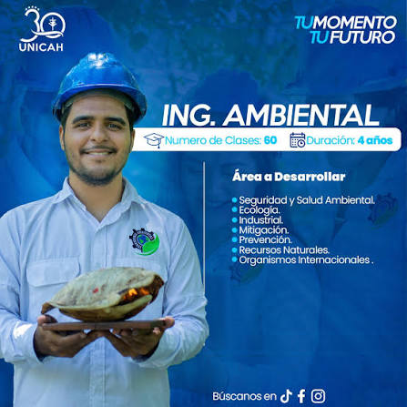

Universidad Católica de Honduras (UNICAH)
Da el siguiente paso en tu formación como ingeniero ambiental.
Da el siguiente paso en tu formación como ingeniero ambiental.

Contamos con 11 campus a nivel nacional. Comunícate con nosotros y le asesoraremos para elegir el plan que mejor se ajuste a sus necesidades.
Línea general: +504 9800-0004
Correo: admisiones@unicah.edu
4 años.
60 clases en total.
Seguridad y Salud Ambiental, Ecología, Industrial, Mitigación, Prevención, Recursos Naturales y Organismos Internacionales.
Directo desde registro.app.unicah.net, o llamando al campus más cercano (ver la lista arriba en "Visítanos").